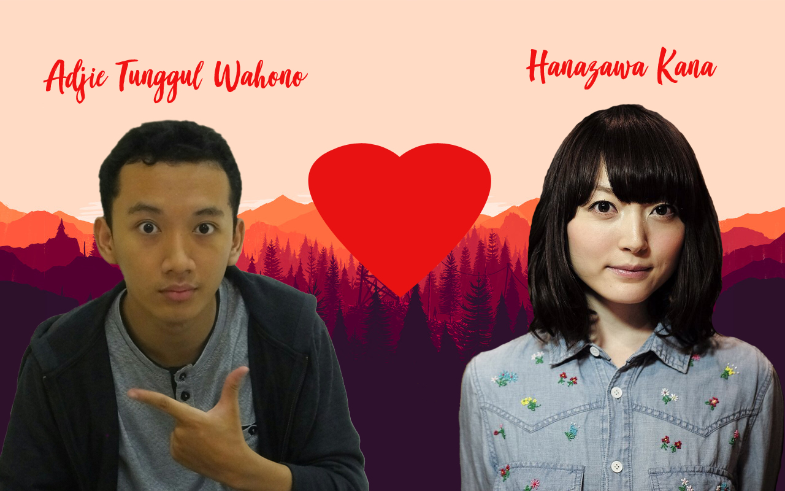
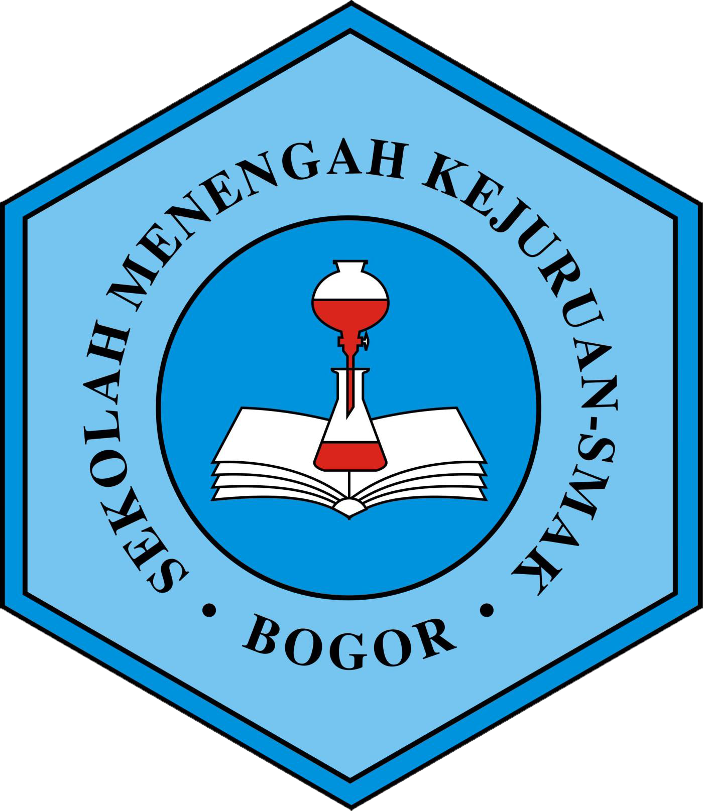
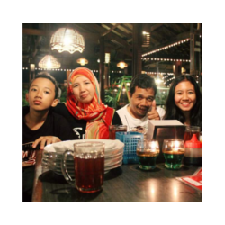
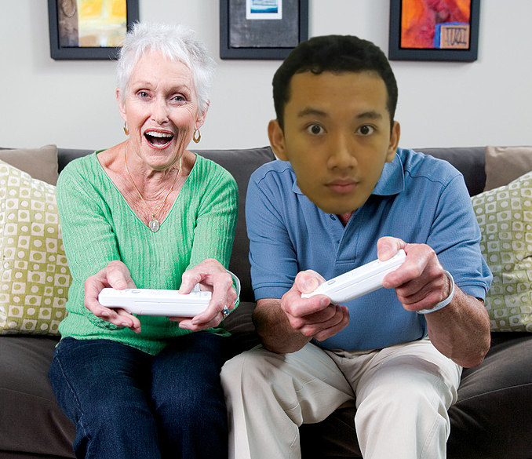
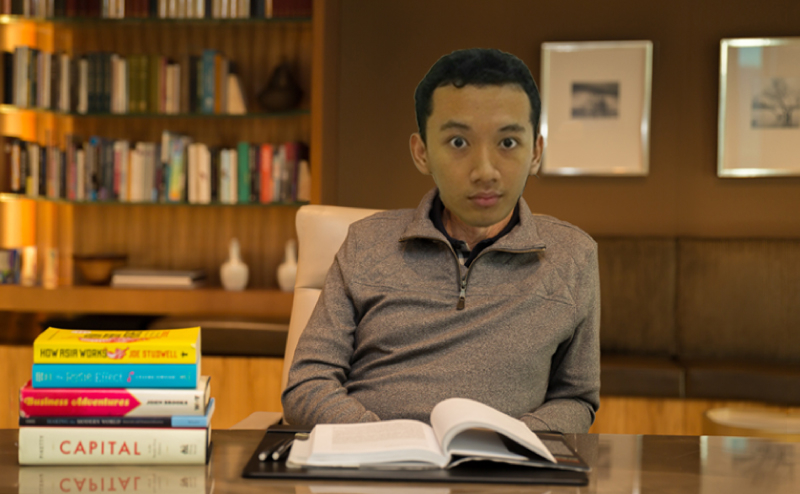
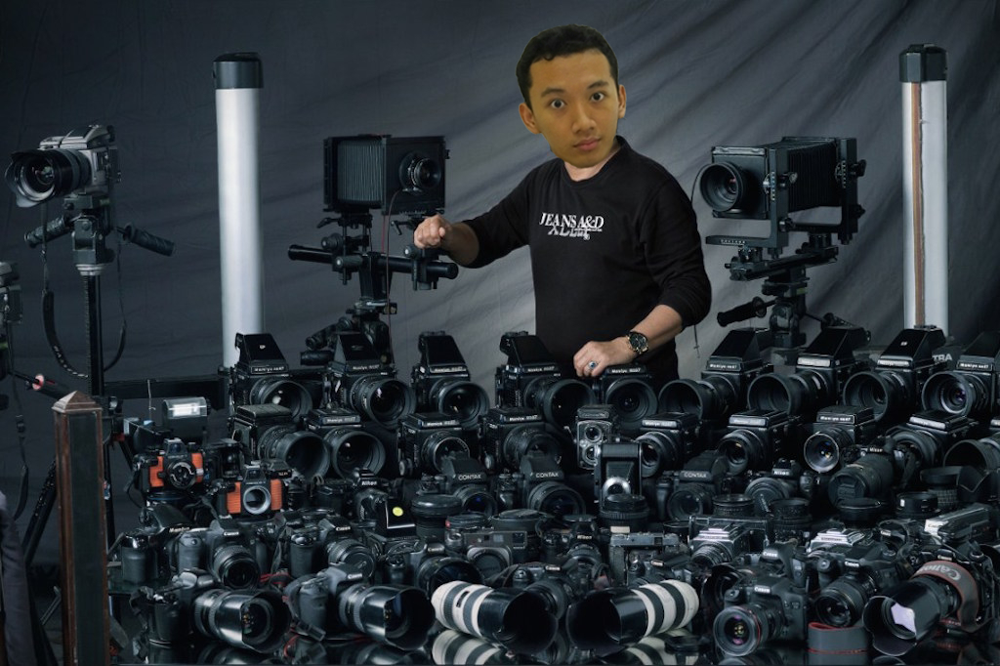
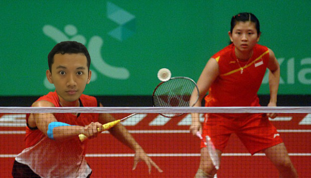

Biografi
 Nama: Adjie Tunggul Wahono Tempat Tanggal Lahir : Bogor. 28 April 2000 Asal Sekolah: SMP Negeri 7 Bogor Hobi: Bermain Games
Keluarga Saya
 Saya adalah anak ke-2 dari 2 bersaudara dengan kata lain saya anak bungsu. Saya memiliki kakak yang sekarang menjadi mahasiswi di Universitas Brawijaya, Malang. Kakak saya alumni SMK-SMAK Bogor angkatan 57. Ibu saya asli orang Bogor bersuku Sunda. Sedangkan ayah saya orang Magetan bersuku Jawa.
Hobi Saya
Saya memiliki hobi bermacam-macam. Mulai dari bermain badminton, foto-foto, desain grafis, membaca buku, dan bermain games. Terutama bermain games merupakan hobi pertama saya. Mulai dari konsol PS 1 sampai PC. Saya menyukai genre games Action, Strategy, Adventure, war, dan FPS.

Bermain Gameslah walau tidak mengenal usia

Bacalah buku sampai kamu bawa buku tersebut ke liang kubur

Kumpulkan lensa terbaik untuk hasil yang terbaik

tetap stay cool walau sedang olahraga
Riwayat Pendidikan Saya
- TK Kartini Bogor (2005-2006)
- TK Al-Munawar Bogor (2006-2007)
- SD Negeri Polisi 04 Bogor (2007-2013)
- SMP Negeri 07 Bogor (2013-2016)
- SMK-SMAK Bogor (2016-Sekarang)
Sosial Media
 : Adjie Tunggul Wahono
: Adjie Tunggul Wahono
 : @adjietunggul
: @adjietunggul
 : adjietunggulwahono
: adjietunggulwahono
 : @adjietunggulwahono
: @adjietunggulwahono
 : Adjie Tunggul Wahono
: Adjie Tunggul Wahono